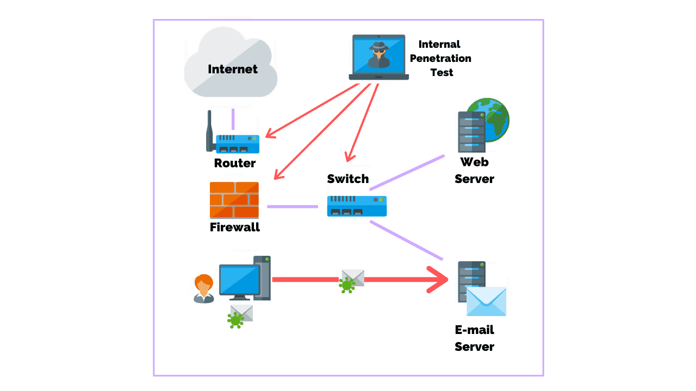
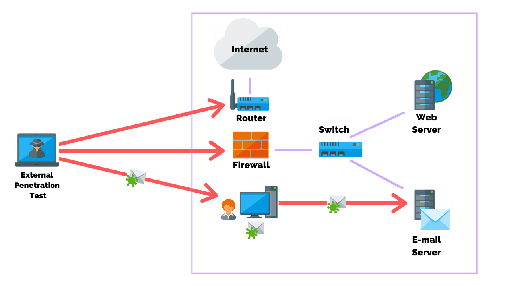

HACKING BASICS
What is Ethical Hacking???
Hacking is the art of technique of finding and exploiting a security loophole in an infrastructure like a
website, a software, a computer or even a human being and the artist is called Hacker.
What does a loophole in a system mean???
In technical term, a loophole can be referred to a part of system which is not properly defind or sequencialand
hense can be exploited to cause unintended in the system.
What is Unethical Hacking???
When a hacker uses is knowledge to steal from or cause damage to other people, it is known as Unethical Hacking.
Like stealing, unethical hacking is also a crime and if caught, the theif will be arrested and would be tried in
court.
Hacker follows following steps:--
- Collect Information.
- Find weak entry points and gets inside the system.
- Try to stay inside the system.
- Clear tracks
Step followed by Black hat Hacker
Step:- 1
Information gethering and reconnaissance
- Finf the surver where the website is running on.
- programming language use to build the website.
- Kind of user present on the website.
- Basic Architecture of the website.
Step:- 2
Vulnerability assesment
- Vulnerability is a flow in a system that leaves it open to attack.
- It is nothing but the security loophole or weak entry point in a system.
Step:- 3
Penetration testing and gaining access.
- Gaining access is another steps of penetration testing which uses the various types of web application
attacks such as SQL injection, cross-site scripting (XSS) and backdoors to discover a target's
vulnerabilities.
Step:- 4
Escalating privileges and maintaining access.
- Hackers tries full control of the system.
- Access to the admin account.
- Install backdoor of the system.
Backdoor:- Backdoor is a program which lets hackers access the system anytime, as long as the backdoor is
installed in a system.
Step:- 5
Clearing tracks.
- Remove all server log files.
- Remove additional installed softwore.
- Delete all extra user that he/she created.
Step followed by white hat hacker.
Step:- 1
Legal documentation (Important)
- Memoramdum of understanding.
- Non-disclosure aggrement.
- Financial aggrement.
Step:- 2
Scope accessment.
- What need to be tested.
- Admin dashboard.
- Test account.
- code review.
Step:- 3
Information accessment.
- Test account.
- Server details.
- Backend language
- Web Architecture.
Step:- 4
Vulnerability assessment
- Same as black hat hacker.
Step:- 5
Penetration testing.
- Try to attack the system just like a black hat hacker (exploiting Vulnerability).
- After exploit, make a proof of concept.
Step:- 6
Gaining excess.
- The security expert now use the Vulnerability to gain access.
Step:- 7
privilege escalation
- Just like a black hat hacker.
Step- 8
Report generation.
Step:- 9
Patch assistance.
Step:- 10
Revalidation
- security expert again recheck vulnerabilities.
Types Of security Testing
based on level of assistance provided by the organisation securitytesting is 3 types
- White box testing
- Black box testing
- Gray box testing
White box testing
- The security expert gets complete assistance from the organisation.
- organisation gives the security expert information like architecture,source code,Demo accounts,server
details etc.
Black box testing
- The security expert given no assistance.
- The goal of this testing to know how a malicious hacker do attack the system from the organisation.
Gray box testing.
- Security expert is given the partial assistance.
- The goal of this testing is to see how a hacker who has some basic knowledge about the organisation can harm
the organisation.
Important*
Most of the organisation preferred gray box testing because:-
- Less effort required
- Given Feelings of how a hacker with minimal knowledge harm the organisation
- On the basic of the location of the security expert, security testing can be classified as two types
- Internal testing
- External testing
Internal Testing
When the security expert tests the application from the permises of the organisation it is called internal
testing.

External testing
When the security expert tests the application from outside the premises of the organisation, it is called
external testing.

- Most company prefer external testing because they are free of extra hessels like arranging for travel etc.
for the security expert.